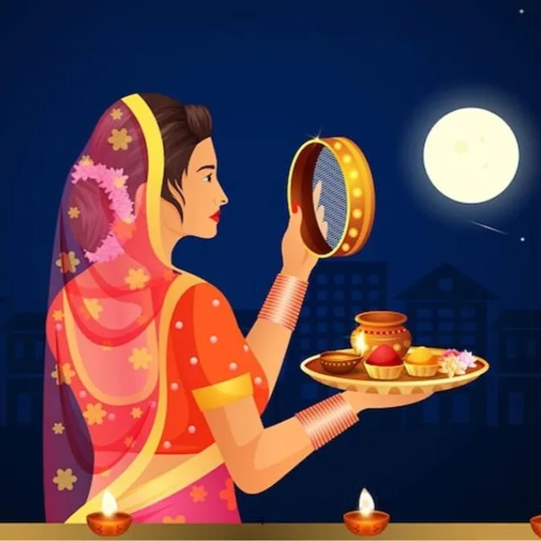
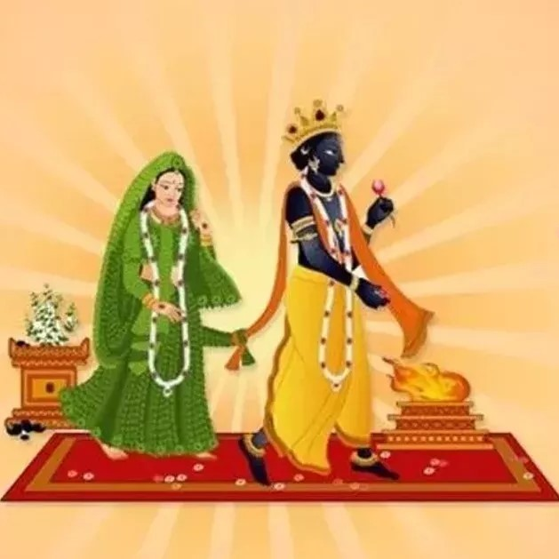
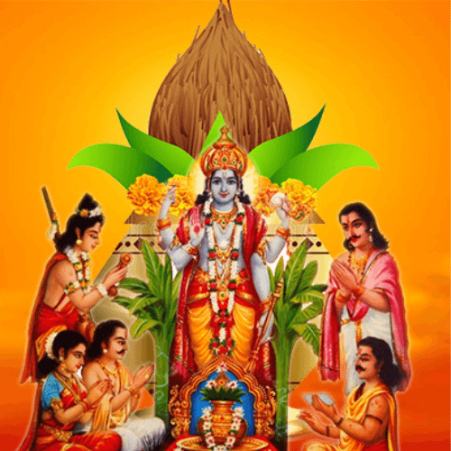
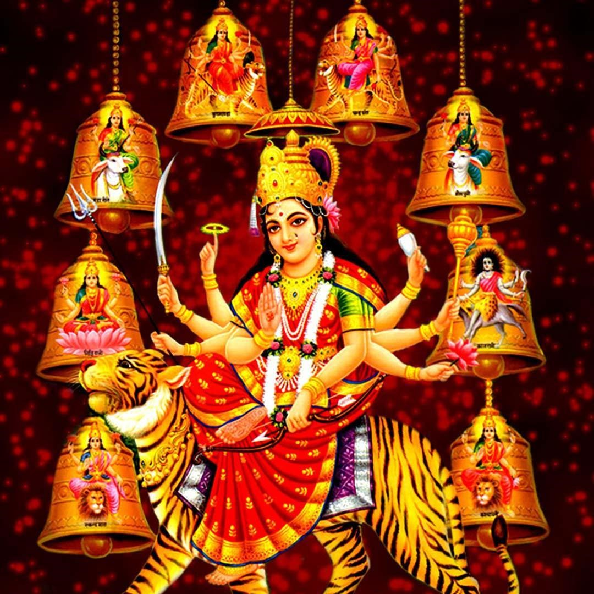

Available Kathas

Karwa Chauth Katha
A story of devotion and love, observed by married women for their husband's longevity.
Read Katha

Tulsi Vivah Katha
The divine wedding of Tulsi and Lord Vishnu, marking the end of Chaturmas.
Read Katha

Satyanarayan Katha
A popular katha recited during Satyanarayan puja to invoke blessings and prosperity.
Read Katha

Navratri Katha
The tale of nine nights dedicated to Goddess Durga and her manifestations.
Read KathaEkadashi Katha
The spiritual significance of observing Ekadashi and its associated story.
Read Katha